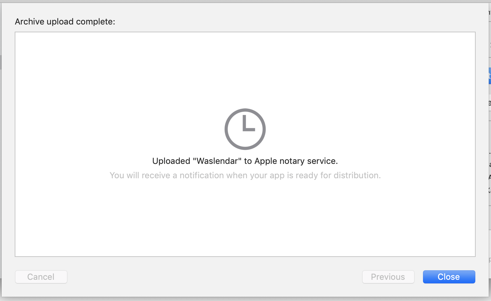

Macアプリの公証を済ませて「悪質なソフトウェア〜」が出ないようにする
Contents
近年Appleの野良アプリの制限が強化されているようで、公証（Notarization）を行なっていないアプリをネットからダウンロードして開こうとすると以下のような表示が出てきてしまいます。

僕の開発したアプリも初めはこの警告が出てきていましたが、以下の手順で解決しました。 ターミナルでも可能ですが、Xcodeでの手順を解説します。
前提
- Apple Developer Programに登録してあることが前提となります。
- アプリをアーカイブしていない場合は、Xcode上部のバーのProduct→Archiveを実行しておいてください。
- そのアプリのApp IDを作成しておいてください。（参考）
公証の手順
Provisioning Profileの作成
Certificates, Identifiers & Profilesを開いて、profile→「+」からプロファイルを作成します。
このページが参考になりますが、違う点だけ書いておきます。

「App Store」ではなく「Developer ID」を選択してください。

次に進んだらApp IDを選択します。
公証を受ける
アプリを一度提出する必要がありますが、App Storeに比べるとだいぶ楽だと思います。
Xcode上部のバーのWindow→Organizerをクリックしてオーガナイザーを開いてください。
公証を受けるビルドを選択し（ビルドごとに公証に出すみたい？）「Distribute App」をクリック。

Developer IDを選択します。

Uploadを選択。Exportを選ぶと公証を通さずにアプリを配布できます。 （今までずっとそっちを選択していました）
上を選ぶと自動でやってくれますが、念の為Manuallyを選択。

Developer IDとProvisioning Profileを選びます。これでUploadすると公証が始まります。
公証中
Organizerから、「Distribute App」→「Developer ID」と行くと、公証中という表示が英語で出てきます。
公証の間は、グレーの時計マークが表示されています。

公証後

完了するとチェックマークが出てきます。たったの数分で完了しました。 右下のExportでアプリを出力できます。
追記: 失敗してしまう場合
一度このようなエラーが出てしまい、公証に失敗してしまったことがありました。
原因はApple Developer Programのサイト上で利用規約に同意していなかったからでした。
利用規約は定期的に更新されていて、その都度同意ボタンを押す必要があるので、注意が必要です。
おわりに
上記の手順を行なうと、このような表示に変わります。 家マークの⚠️が消えれば完了です。
Comments
Show Comments